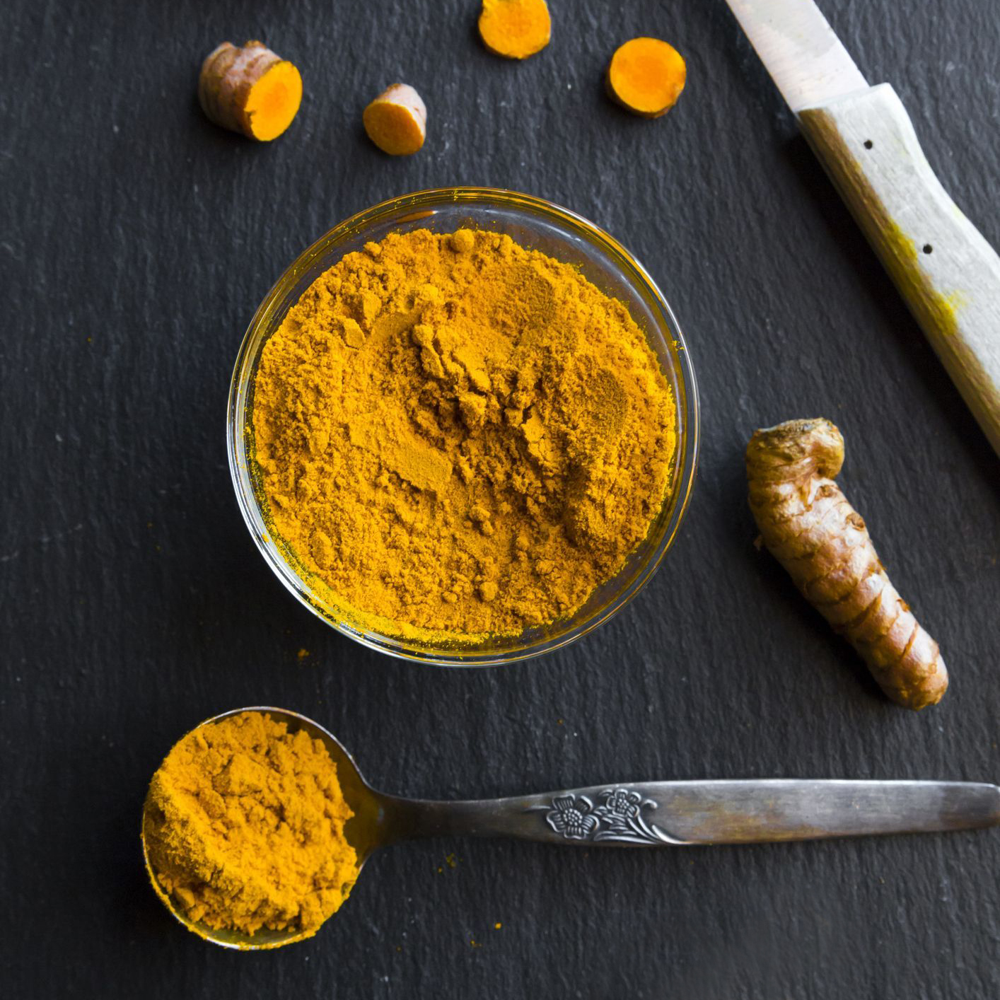

1. Кардамон
Кардамон - популярная специя, которая благодаря своим целебным свойствам используется не только в кулинарии, но и в натуральной медицине. Кардамон - проверенное средство от простуды, для похудения, а также для потенции и свежего дыхания.
2. Корица
Корица — это высушенная кора коричных деревьев. Существуют четыре вида таких деревьев: коричник цейлонский, коричник китайский, коричник шалабарский и Циннамон (пряная корица). Самый популярный коричник цейлонский, его также называют настоящей корицей.
3. Бадьян
Это одна из самых красивых пряностей. Имеет необычную форму плода — в виде цветка-звезды. Насчитывает от 5 до 10 остроконечных секций лодочковидных, длиной от 0,5 см до 3 см. Цвет весьма необычный — напоминают ржавчину. Плоды срывают с восточных деревьев, поле чего сушат.
4. Куркума
Куркума — отличный консервант и очень полезна для здоровья (антиоксидант, противовоспалительные свойства, уменьшает холестерин, очищает кровь). В Индии куркуму добавляют почти во все блюда.
5. Ваниль
Ваниль является единственным съедобным плодом из семейства орхидей, который насчитывает более чем 20 000 видов и 18 000 гибридов по всему миру. Из них всего 150 сортов planifolia (сорт Бурбон) и tahitensis (сорт Таити) используемые в коммерческих целях. Иногда сорт pompona применяется для парфюмерных шедевров.
6. Перец
Растение принадлежит роду перцев семейства перечных, имеет около двух тысяч видов. Как пряность используются только 5-6 видов родом из Южной Азии. Продукт относится к "настоящим перцам". Как специя известен более 4 тысяч лет. Родина — Юго-Восточная Индия, Малабарское побережье Индийского океана.
7. Кумин
Кумин — семена растения семейства зонтичных — Cuminum cyminum. Внешне напоминает тмин, но по вкусу и целебным свойствам значительно превосходит его. Название происходит от маленького островка Комино, в составе Мальтийского архипелага, который чуть ли не весь покрытый желтыми полями кумина.
Родиной этого растения считают Среднюю Азию. В Индии местное население выращивает кумин на полях и огородах. По-арабски его называют «каммун». Культивируют в Северной Африке и Латинской Америке, в Юго-Восточной Азии, Иране и Афганистане. В Европе он распространен меньше (за исключением стран Средиземноморья), так как оттеснён на задний план тмином.
Кумин одно или двухлетнее, реже многолетнее травянистое растение высотой 40 -90см. Внешне очень напоминает тмин, поэтому их часто путают. Листья очередные, нижние — дважды тройчато рассечённые на тонкие линейные сегменты. Цветки белые или красные, в двойных зонтиках, которые имеют обёртки. Плод — продолговатый 6мм длиной и 1,5 мм шириной. Семена более крупные, светлее, чем у тмина, аромат у них более сильный и острый.
8. Пажитник
Фенугрек — он же пажитник, шамбала, хельба, метхи, греческое сено, чаман, греческий козий трилистник, фенигрекова трава, треуголка, греческая сочевица, верблюжья трава … Множество названий свидетельствует о его широком применении в кухне разных стран и для разных целей.
Фенугрек же – немецкое слово, переводящееся как «козий рог», очевидно из-за формы стручков, похожих на рога этого животного. Русское название происходит от старинного слова «пажить» - пастбище, поскольку он растет на лугах и крупный рогатый скот ест его весьма охотно.
Родина пажитника — восточная область Средиземного моря и Малая Азия. Растет также в Сирии, Иране, Пакистане, Монголии, Японии, в Северной Африке, Эфиопии, некоторых областях США.